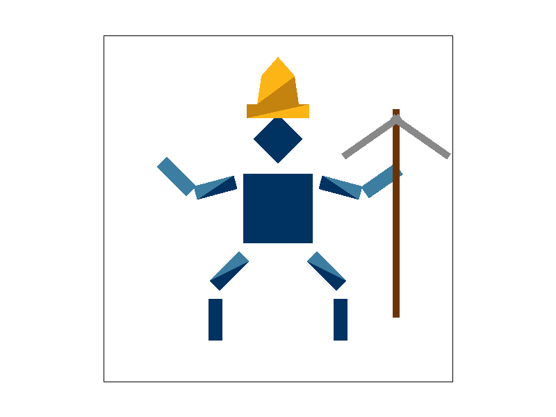
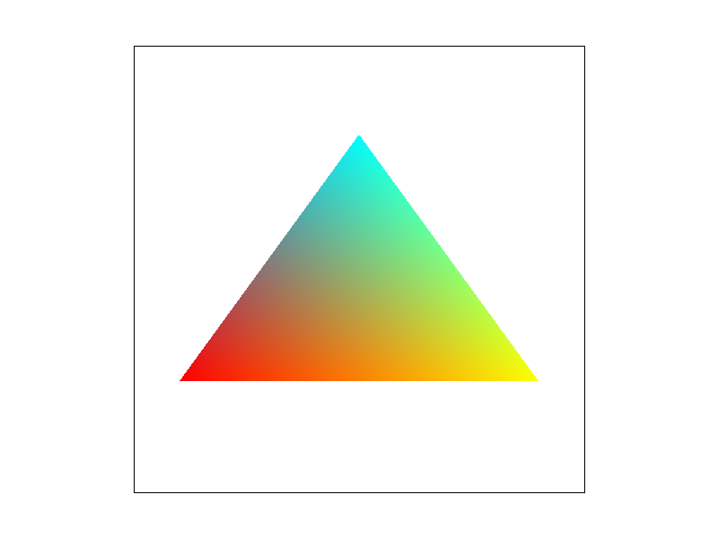
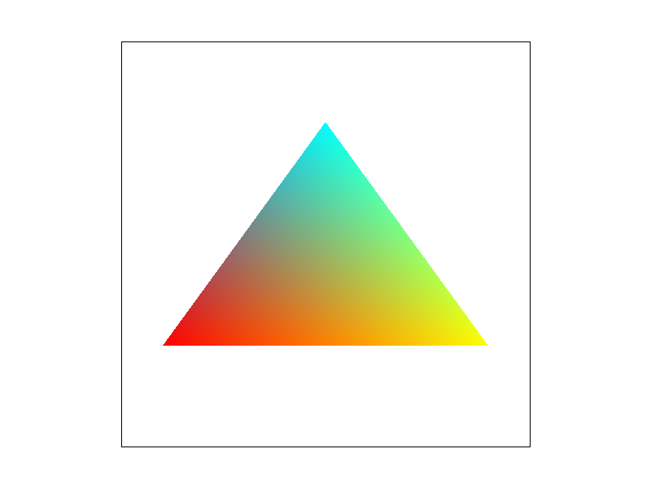

Here is text for task 1

Here is text for task 2

This cubeman is a miner who has a pickaxe who is wearing the UC Berkeley colors. This was achieved by rotating the already existing arms and legs into position.
Here is text for task 4
 

Here is text for task 5
Here is text for task 6